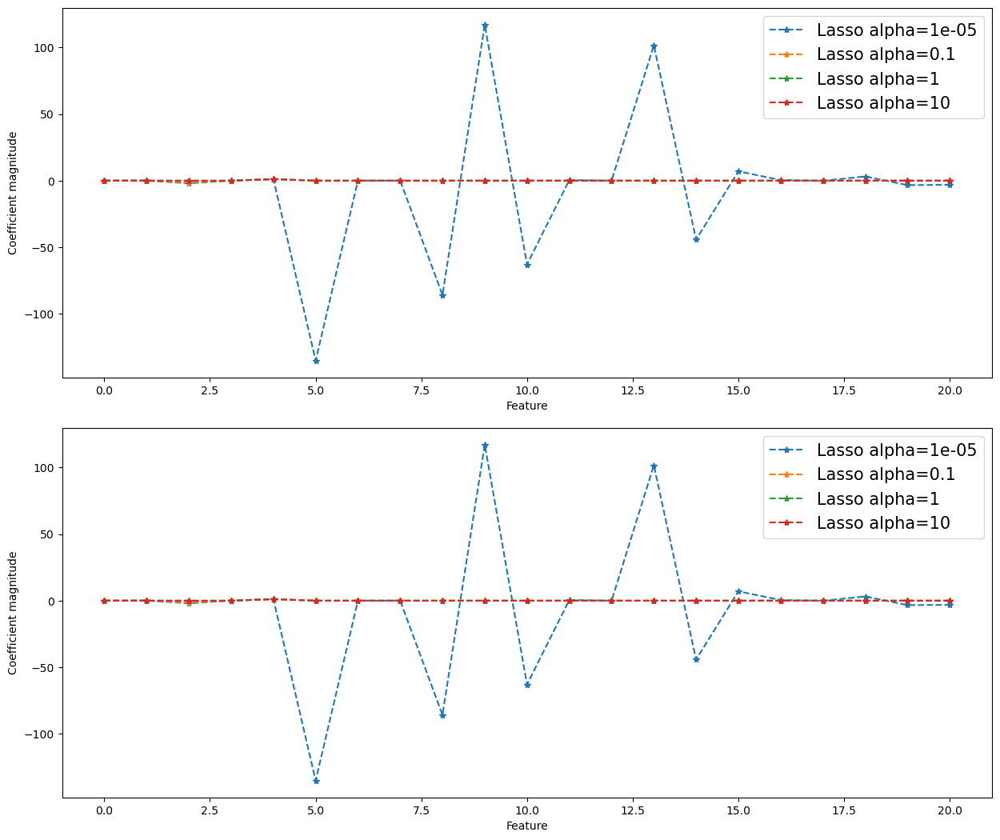
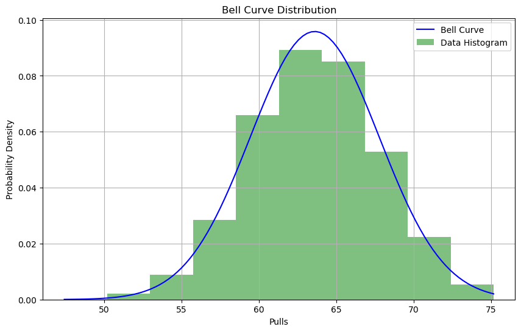
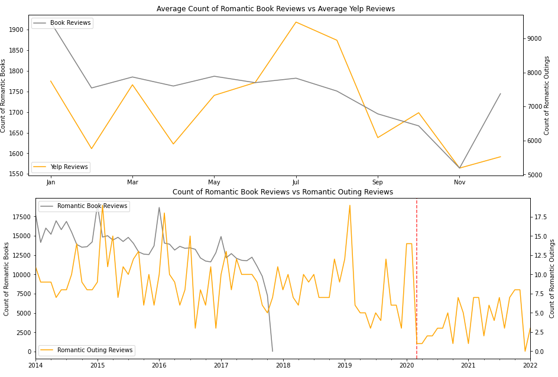
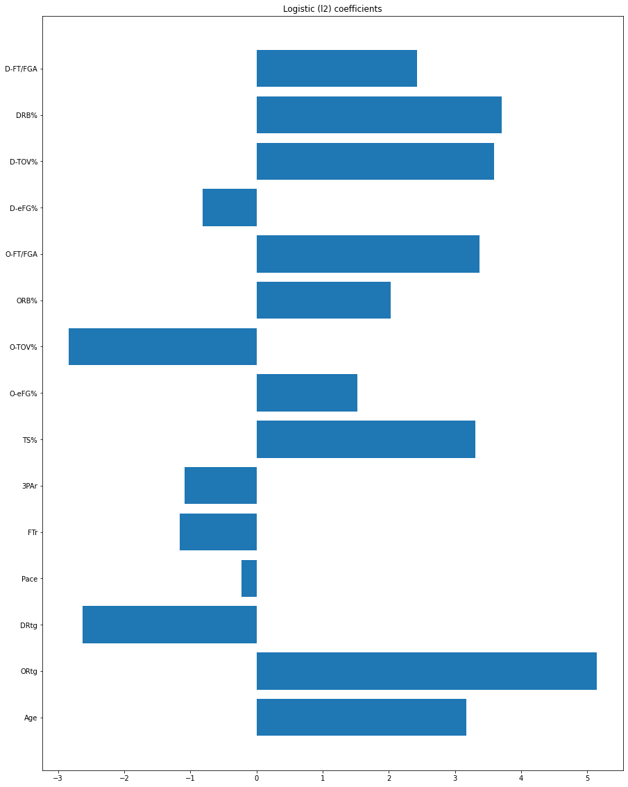
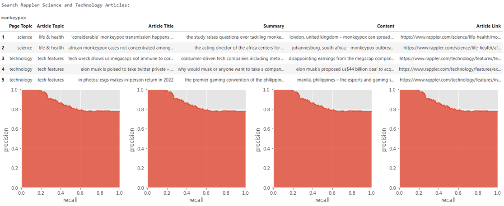

Automated Face Detector, ID Picture Creator and Background Remover
Innovative tool combining facial detection with automated ID photo creation and background removal technology.
Automated Sudoku Solver
Developed an innovative Automated Sudoku Solver that allows users to take pictures of Sudoku puzzles and receive immediate, automated solutions. This project combines advanced image processing techniques with algorithmic puzzle solving, providing a seamless and interactive user experience.
Big Data Analysis of Population Movement and Behavior in response to COVID19
Comprehensive analysis of population dynamics and behavioral changes during the COVID-19 pandemic using Safegraph Census data.

Boston Housing Dataset ML Class Practice
An in-depth machine learning project analyzing the Boston Housing Dataset to understand the importance of various features in housing price prediction.
Coursera Course Recommender System
A personalized recommender system providing course suggestions from Coursera based on user preferences and data.
Enron Scandal Email Network Analysis
Network analysis of the Enron email dataset, uncovering insights into communication patterns during the scandal.
FlavorFit - Food Recipe Recommender
FlavorFit: A culinary adventure with personalized recipe recommendations tailored to individual taste preferences and dietary needs.
Fruit Classifier Homework
Machine Learning model designed to accurately classify various types of fruits, demonstrating image recognition capabilities.

Genshin Impact Roll Simulator and Monte Carlo Analysis
Interactive simulator for Genshin Impact rolls combined with Monte Carlo analysis for probability estimations.

Goodreads or Foodreads - Understanding Reading and Socializing Trends and their Relationship
Analyzing trends in reading and social behaviors through Goodreads data to understand their interrelation.
Happy Little Accidents - An analysis of our imagination of nature through Bob Ross paintings
Explorative analysis of nature's portrayal in Bob Ross's artwork, delving into the imaginative aspects of his paintings.
Image Enhancement Assignment
Advanced techniques in image processing applied to enhance and transform digital images.
Inside AirBnb - Big Data Price Predictive Analysis in US AirBnB Listings
Predictive time series analysis of AirBnB listing prices across the US, leveraging big data for market insights.
K-Drama XAI Project
Exploring Explainable AI (XAI) through the lens of K-Drama data analysis and interpretation.
Leaf Classification Image Processing Class Homework
Developing an image processing solution for accurate leaf classification as part of academic coursework.
Map Image Processing and Automated Sheet Music Reading
Combining map image processing with automated reading of sheet music for innovative data interpretation.
Mapping a Brighter Future - Geospatial Analysis on Electrical Coverage and School Density
By identifying areas with limited access to electricity and correlating them with school locations, this study aims to highlight regions where infrastructural improvements can significantly enhance educational access and quality.
McDonalds and Jollibee Map Placement Geopandas Practice
Geospatial analysis of McDonald's and Jollibee locations, utilizing GeoPandas for strategic placement insights.

NBA Stats Analysis and Feature Importance
In-depth analysis of NBA player statistics to determine key features and performance indicators.
Neural Machine Translation Homework
Application of Neural Machine Translation techniques for efficient and accurate language translation. Experiments between different architectures including GRU and LSTM and also lookes into Attention decoder usage. Comparisons present better results than Google Translate.
Our Currency Your Problem - An analysis on the factors surrounding the recent USD strength and its effect on the Philippine economy
Critical time series analysis of the US Dollar's strength and its wide-ranging impact on the Philippine economy.
Pitch-Out!! - Mastering NES-Style Chiptunes with GPT-2 Transformer's Sonic Knockout
Deep learning passion project involving random generation of NES-style chiptunes using GPT-2 Transformer's advanced capabilities.

Recommender System Implementation for Rappler's Science and Technology Sections
Custom-built recommender system enhancing user experience for Rappler's Science and Technology content.
Sakay DB - Database for Public Transportation Drivers and Travels
Developed 'Sakay DB', a comprehensive database designed to streamline and optimize the management of public transportation logistics. This project focuses on providing real-time data and analytics for drivers and travel routes, enhancing operational efficiency and passenger experience in public transit systems.
Stack Sleuths - Big Data Sentiment Analysis on Stack Exchange Comments
Sentiment analysis on Stack Exchange comments, extracting insights from large-scale user interactions.
Star Wars Social Network Analysis
Social network analysis within the Star Wars universe, revealing complex character interactions and alliances.
Subway Symphony - Network Analysis of Vienna's U-bahn
Network analysis project mapping the intricate routes and connections of Vienna's U-bahn system.
Transformer Implementation Class Task
Implementation of Transformer models as a class assignment, showcasing understanding of advanced AI concepts.
Webscraping Philippine Supreme Court Decisions and Cases
Scraped almost 50,000 Philippine Supreme Court decisions from their e-library, cleaned and organized them; ready for legal analytics, machine learning and LLM use cases.
Yelp Us AirBnB - Discovering the Viability of Listing Properties For Potential Real Estate Investors with AirBnB and Yelp data
Analyzing AirBnB and Yelp data to assess property listing viability for potential real estate investors.